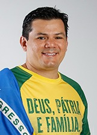
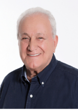
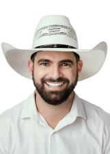

Espírito Santo
Quem ocupa os cargos hoje e quem assume em 2027.
Resultado provisórioTSE, capturado em 29/10/2026
Poder Executivo
Administra o governo e executa as leis: saúde, educação, segurança, estradas e o orçamento.
Governador
Renato CasagrandePSB · 1.171.288 votos✓ Reeleito›Quem comanda cada cidade do estado.
Poder Legislativo
Cria as leis, aprova o orçamento e fiscaliza o Executivo.
Senadores (3)
 Fabiano ContaratoREDE · 1.117.036 votos · eleito em 2018★ Novato no Senado›Magno MaltaPL · 821.189 votos · eleito em 2022↺ Retorno›
Fabiano ContaratoREDE · 1.117.036 votos · eleito em 2018★ Novato no Senado›Magno MaltaPL · 821.189 votos · eleito em 2022↺ Retorno› Marcos do ValCIDADANIA · 863.359 votos · eleito em 2018★ Novato no Senado›
Marcos do ValCIDADANIA · 863.359 votos · eleito em 2018★ Novato no Senado›
Deputados federais (10)
Bancada federal por partido
10 cadeiras de Espírito Santo
- PODE220%
- PP220%
- PT220%
- REPUBLICANOS220%
- PL110%
- PSB110%
Do partido com mais cadeiras para o com menos, não por posição política. Cada partido usa a sua cor de marca.
Deputados federais (10): buscar e ver a lista

Gilvan O Federal da DireitaPL · 87.994 votos · eleito em 2022★ Novato na Câmara›Helder SalomãoPT · 120.337 votos · eleito em 2022✓ Reeleito›Jack RochaPT · 51.317 votos★ Novato na Câmara›Messias DonatoREPUBLICANOS · 42.640 votos · eleito em 2022★ Novato na Câmara›Paulo FolettoPSB · 48.776 votos · eleito em 2022✓ Reeleito›Deputados estaduais e distritais (30)
Assembleia por partido
30 cadeiras de Espírito Santo
- PL517%
- REPUBLICANOS413%
- PSB310%
- PDT27%
- PODE27%
- PP27%
- PSDB27%
- PT27%
- UNIÃO27%
- CIDADANIA13%
- PATRIOTA13%
- PSC13%
- PSOL13%
- PTB13%
- REDE13%
Do partido com mais cadeiras para o com menos, não por posição política. Cada partido usa a sua cor de marca; cinza é partido sem cor registrada na fonte.
Deputados estaduais e distritais (30): buscar e ver a lista

FerraçoPP · 20.888 votos · eleito em 2022✓ Reeleito›Hudson LealREPUBLICANOS · 20.804 votos✓ Reeleito›Iriny LopesPT · 36.720 votos · eleito em 2022✓ Reeleito›Janete de SáPSB · 25.846 votos✓ Reeleito›Jose EsmeraldoPDT · 20.219 votos✓ Reeleito›João CoserPT · 58.279 votos★ Novato›Lucas PolesePL · 29.490 votos★ Novato›Lucas ScaramussaPODE · 26.720 votos · eleito em 2022★ Novato›Marcelo SantosPODE · 41.627 votos✓ Reeleito›Mazinho dos AnjosPSDB · 20.731 votos★ Novato›
Pablo MuribecaPATRIOTA · 24.555 votos★ Novato›Raquel LessaPP · 26.439 votos✓ Reeleito›Sergio MeneguelliREPUBLICANOS · 138.523 votos · eleito em 2022★ Novato›Tyago HoffmannPSB · 32.123 votos · eleito em 2022★ Novato›Vandinho LeitePSDB · 29.156 votos✓ Reeleito›Zé PretoPL · 15.901 votos · eleito em 2022★ Novato›Os eleitos de cada cidade do estado.
Poder Judiciário
Julga os conflitos e garante que as leis sigam a Constituição.
Os desembargadores do Tribunal de Justiça e do Tribunal Regional Eleitoral. Não são eleitos.
Poder Executivo
Administra o governo e executa as leis: saúde, educação, segurança, estradas e o orçamento.
Governador
Lorenzo PazoliniREPUBLICANOS · 1.151.818 votos★ Novato›Quem comanda cada cidade do estado.
Poder Legislativo
Cria as leis, aprova o orçamento e fiscaliza o Executivo.
Senadores (3)
Evair de MeloREPUBLICANOS · 982.978 votos★ Novato no Senado›Magno MaltaPL · 821.189 votos · eleito em 2022↺ Retorno›Renato CasagrandePSB · 995.361 votos↺ Retorno›Deputados federais (10)
Bancada federal por partido
10 cadeiras de Espírito Santo
- PL220%
- PT220%
- UNIÃO220%
- PODE110%
- PP110%
- PSB110%
- REPUBLICANOS110%
Do partido com mais cadeiras para o com menos, não por posição política. Cada partido usa a sua cor de marca.
Deputados federais (10): buscar e ver a lista
Deputados estaduais e distritais (30)
Assembleia por partido
30 cadeiras de Espírito Santo
- PL620%
- MDB413%
- PODE413%
- PP413%
- PSB310%
- PT310%
- AGIR27%
- REPUBLICANOS27%
- PSOL13%
- UNIÃO13%
Do partido com mais cadeiras para o com menos, não por posição política. Cada partido usa a sua cor de marca.
Deputados estaduais e distritais (30): buscar e ver a lista
Os eleitos de cada cidade do estado.
Poder Judiciário
Julga os conflitos e garante que as leis sigam a Constituição.
Os desembargadores do Tribunal de Justiça e do Tribunal Regional Eleitoral. Não são eleitos.
Como ler
★ Novato Primeiro mandato nesta casa (Câmara ou Senado).
✓ Reeleito Já estava no cargo e foi eleito de novo.
↺ Retorno Já teve mandato, mas estava fora.
Sem selo Não conseguimos ligar a pessoa a um mandato anterior. Isso não quer dizer que seja novata: simplesmente não afirmamos nada.
Provisório Só é confirmado na diplomação.